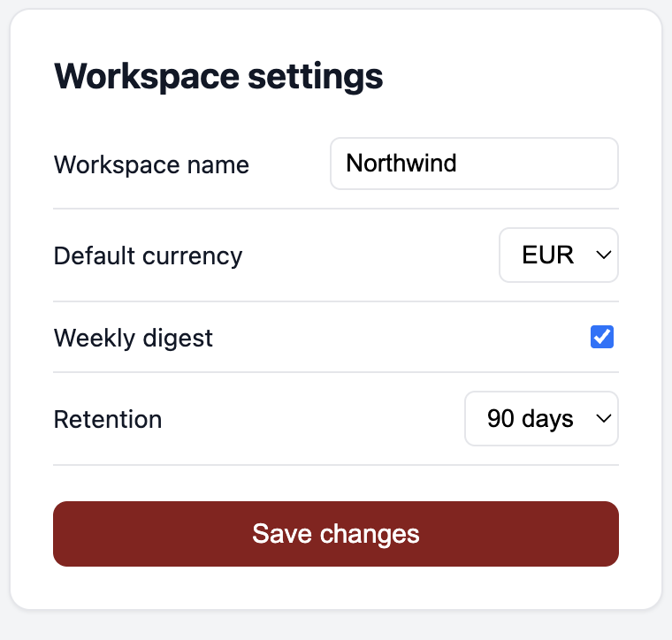
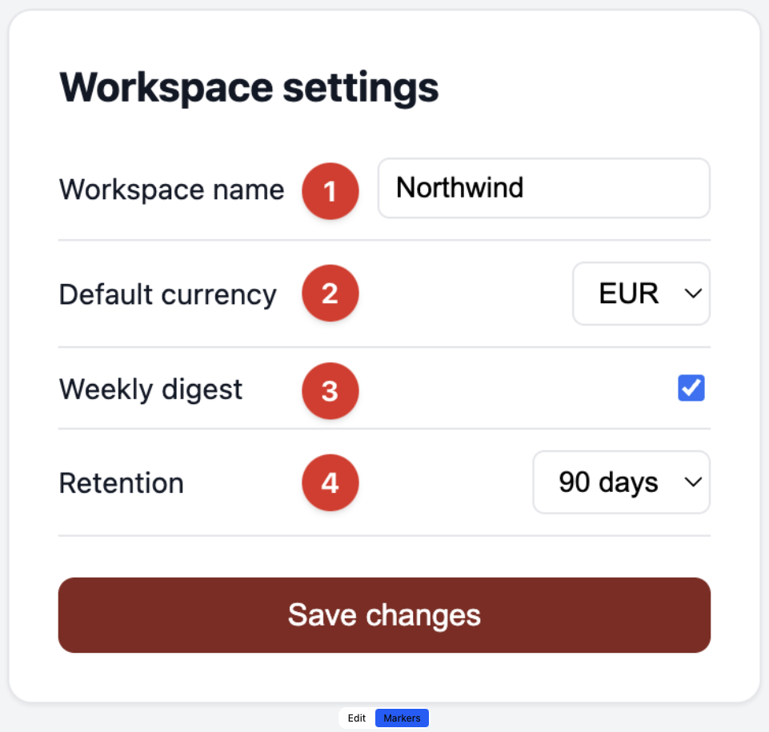

settings-step-1
the capture

settings-step-1-markers
a second file — markers shown on the Markers layer
Docs › Workspace › Settings
Workspace settings
1
Workspace name
— the display name used across the app.
2
Default currency
— applied to every new dashboard.
3
Weekly digest
— a Monday summary email.
4
Retention
— how long raw events are kept.
docs/workspace-settings.md
written from the marker list, numbers intact